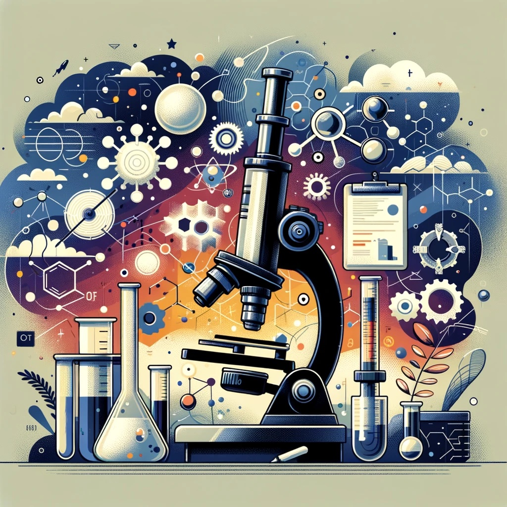

Una perspectiva pragmática sobre la investigación científica

¿Alguna vez te has preguntado para qué sirve la investigación científica?
Esta es una cuestión que me plantean con frecuencia tanto estudiantes como profesionales, a menudo en variantes como «Si quiero ser un profesional, ¿por qué necesito saber cómo investigar?», o «Ya soy un profesional formado, ¿para qué necesitaría saber cómo se investiga?».
Mi respuesta se centra en una distinción clave: hay generadores de conocimientos científicos y consumidores de dichos conocimientos. Los científicos, como generadores, nos dedicamos a producir nuevo conocimiento, impulsados por la curiosidad y el deseo de entender mejor el mundo. Investigamos para descubrir lo desconocido, resolver problemas complejos y, en última instancia, mejorar nuestra realidad. Este proceso implica una exploración rigurosa, meticulosa y a menudo llena de desafíos.
Por otro lado, los consumidores de conocimientos científicos son igualmente cruciales en el ecosistema del saber. Estos individuos aplican, utilizan y se benefician de los descubrimientos y comprensiones generadas por los investigadores. Incluyen a profesionales en una amplia gama de campos, desde médicos que aplican los últimos avances en medicina, hasta ingenieros que construyen sobre los fundamentos de la física y la química. También abarcan a educadores, formuladores de políticas, emprendedores y, en realidad, a cualquier persona que aplique en su vida diaria los resultados de la ciencia.
La distinción entre generadores y consumidores de conocimiento científico es, por tanto, una de propósito y no de importancia o valía. Ambos roles son interdependientes y esenciales. Sin los generadores, no habría nuevos conocimientos que aplicar o problemas que resolver. Sin los consumidores, los descubrimientos permanecerían en el aislamiento académico, sin impactar la sociedad o contribuir al progreso.
En este sentido, la investigación científica es como una moneda de dos caras: una dedicada a la generación de nuevos conocimientos y otra a su aplicación y difusión. Cada lado complementa y enriquece al otro. Por lo tanto, entender y valorar ambos aspectos de la ciencia es fundamental para cualquier profesional que aspire a estar en la vanguardia de su campo y contribuir significativamente a nuestra sociedad.
Así, cuando reflexionamos sobre la investigación científica, no solo debemos admirar la belleza de los descubrimientos en sí, sino también apreciar cómo estos conocimientos se entrelazan y fortalecen nuestras vidas cotidianas, nuestras profesiones y nuestro mundo.
Relevancia de la investigación para el ejercicio profesional
Conozcamos a Alex, un profesional recién egresado en el área de salud, emocionado por comenzar su carrera en un hospital prestigioso. La historia de Alex nos servirá para explorar la importancia de la investigación científica en la práctica profesional, especialmente en el ámbito de la salud, y cómo diferentes niveles de evidencia impactan en su trabajo:
- Tradición: Al principio, Alex se guía por los protocolos y prácticas establecidas en el hospital. Observa a los médicos y enfermeros experimentados, adaptando sus métodos tradicionales. Pronto, Alex se da cuenta de que, si bien estas prácticas tradicionales son útiles para comprender los fundamentos del cuidado de la salud, limitan su capacidad de innovar y cuestionar métodos obsoletos.
- Autoridad: Luego, Alex sigue las instrucciones de los médicos senior y supervisores. Estas directrices, emanadas de figuras de autoridad en el campo de la salud, parecen más confiables que la simple tradición. Sin embargo, Alex aprende que incluso los profesionales más experimentados pueden estar sujetos a errores y perspectivas limitadas.
- Experiencia personal: A medida que Alex gana experiencia, comienza a desarrollar su propio juicio clínico. Su experiencia le permite encontrar soluciones más personalizadas y eficaces. Pero, Alex se da cuenta de que la experiencia personal, sin un enfoque basado en evidencia, puede perpetuar prácticas ineficientes o basadas en creencias erróneas.
- Conocimiento estructurado: Finalmente, Alex empieza a integrar su experiencia con conocimientos basados en la investigación científica. Se mantiene al tanto de los últimos estudios y avances en el campo de la salud, lo que le permite aplicar tratamientos y cuidados más efectivos y actualizados. Esta combinación de experiencia y conocimiento estructurado le permite no solo mejorar sus habilidades clínicas sino también aportar a la calidad del cuidado de sus pacientes.
La trayectoria de Alex destaca la relevancia de basar la práctica en la salud en la evidencia científica. Al equilibrar la tradición, la autoridad, la experiencia personal y el conocimiento científico actualizado, Alex no solo mejora como profesional de la salud sino que también contribuye a la evolución y mejora continua de las prácticas en su entorno laboral. Este enfoque basado en la evidencia es esencial para mantenerse a la vanguardia en un campo tan dinámico y crucial como el de la salud.
Un enfoque basado en evidencia científica permite a los profesionales mantenerse al día con los avances en su campo, evitando quedarse atrás en prácticas obsoletas o ineficaces. En palabras de Carl Sagan, uno de los grandes mandamientos de la ciencia es: «No confíes en los argumentos que proceden de la autoridad». Sagan entendía profundamente la importancia de cuestionar y verificar, en lugar de aceptar ciegamente. Esta filosofía es fundamental en la práctica profesional, donde la dependencia de la autoridad y la tradición puede ser un obstáculo para el progreso y la innovación.
La investigación científica en la práctica
En la realidad, los científicos nos especializamos en temas limitados, lo que nos permite mantenernos actualizados en áreas específicas. Esta especialización contrasta con la práctica profesional, donde se requiere una visión más amplia, aunque menos profunda, de varios tópicos. Aquí es donde la simbiosis entre el profesional practicante y el investigador científico se vuelve crucial.
La formación profesional y la práctica diaria están intrínsecamente ligadas a los hallazgos de investigaciones previas. Cada concepto aprendido, cada técnica utilizada y cada herramienta aplicada en el campo profesional tiene su origen en la investigación científica. Los libros de texto, por ejemplo, son compendios de conocimientos generados a través de años de investigación meticulosa. Aunque uno no desee ser un generador de conocimientos, es esencial convertirse en un consumidor informado de ellos.
La ciencia no es estática, y lo que ayer era un descubrimiento revolucionario, hoy puede ser una práctica común, y mañana, quizás, un recuerdo obsoleto. Por lo tanto, es esencial que los profesionales no solo asimilen el conocimiento existente, sino que también se mantengan al tanto de las nuevas investigaciones. Los resultados de investigaciones recientes deben modelar y reformar continuamente la práctica profesional.
La integración de los resultados de la investigación en la práctica profesional no es solo una cuestión de mantenerse informado, sino también de aplicar críticamente esos conocimientos. Los profesionales deben ser capaces de evaluar nuevos hallazgos, integrarlos en su trabajo y adaptar sus prácticas a medida que evoluciona el conocimiento científico. Esto requiere un compromiso continuo con el aprendizaje y la mejora personal y profesional.
No hay profesional más peligroso que aquel que cree que ya sabe todo lo que necesita saber. Tal mentalidad lleva a la complacencia y a la resistencia al cambio, lo cual es contrario a la naturaleza misma de la ciencia y la innovación. La práctica profesional debe ser un proceso de aprendizaje y adaptación continuos, donde la nueva evidencia científica informe y mejore constantemente nuestras habilidades y métodos.
Conclusión
En resumen, la investigación científica no solo es esencial para quienes buscan generar conocimiento, sino también para los profesionales en cualquier campo. Permite basar el ejercicio profesional en evidencias sólidas y actualizadas, fomentando un enfoque más reflexivo, crítico e innovador en el trabajo.
Por lo tanto, tanto para el estudiante en formación como para el profesional experimentado, adoptar la ciencia y sus metodologías proporciona un arsenal de herramientas esenciales, potenciando la competencia y eficacia en su respectivo campo. Aceptar la ciencia como un viaje continuo de descubrimiento y aplicación es esencial para cualquier profesional que aspire a la excelencia y la relevancia en su trabajo.